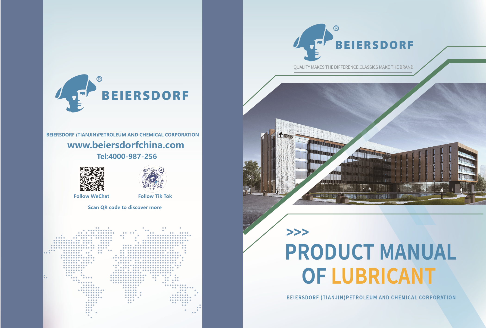
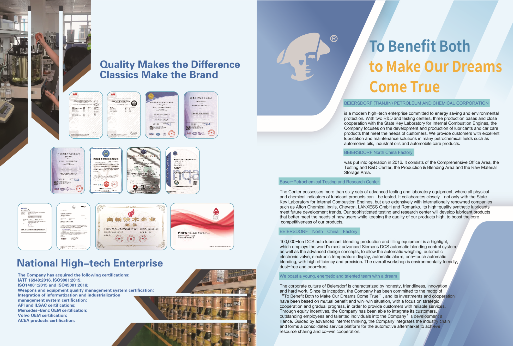
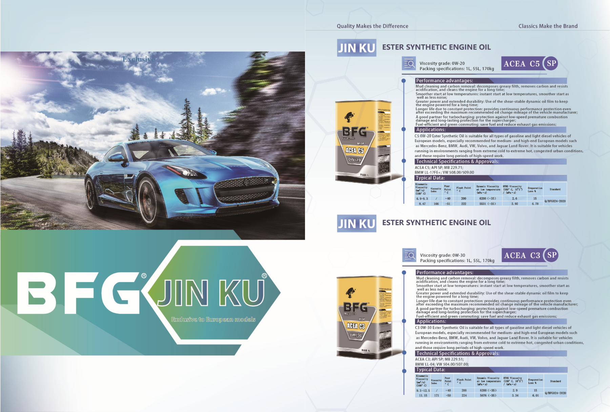
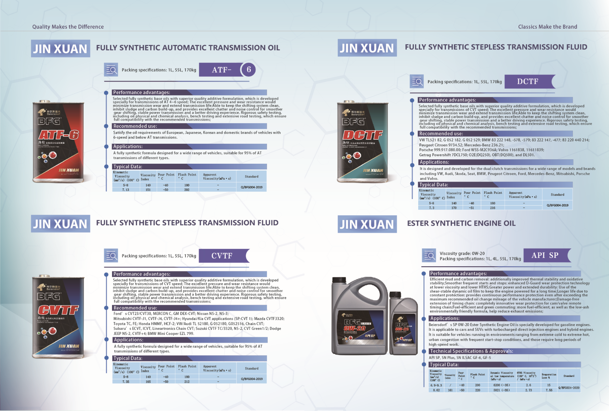
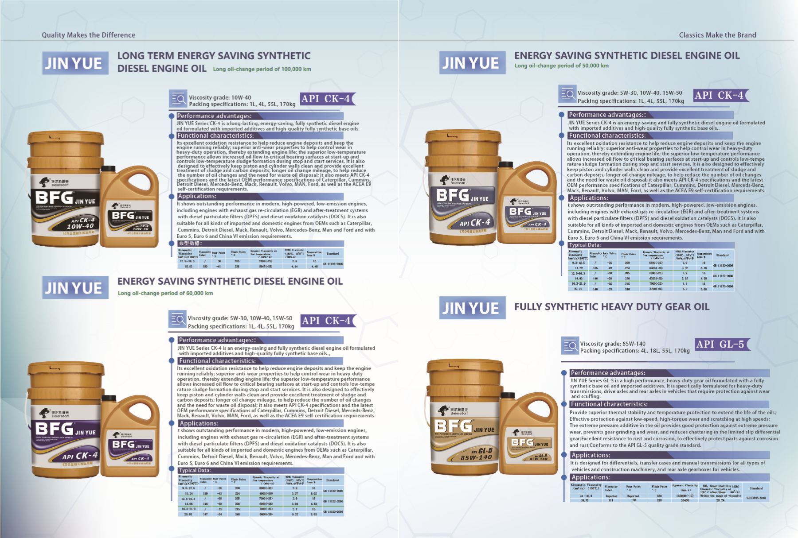
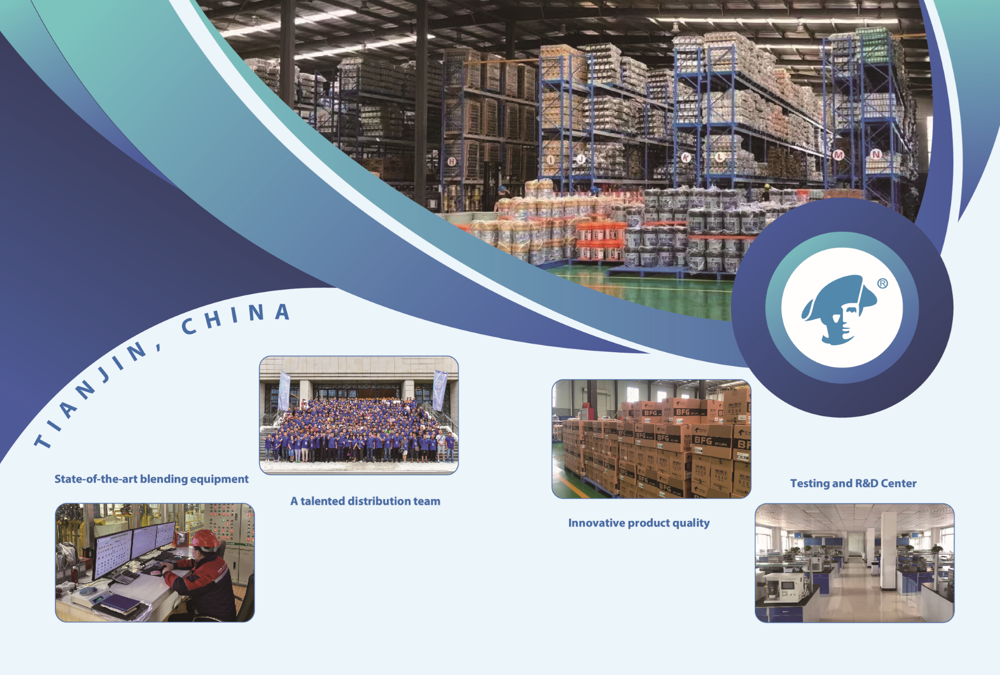

Energy-saving technology
The company is committed to energy saving and environmental protection, developing lubricants and car care products that meet practical customer needs.
Product Manual of Lubricant
BEIERSDORF (Tianjin) Petroleum and Chemical Corporation develops BFG lubricant products for passenger cars, commercial vehicles and industrial driveline systems.

About BEIERSDORF
The company is committed to energy saving and environmental protection, developing lubricants and car care products that meet practical customer needs.
A testing and research center with advanced laboratory equipment supports physical and chemical indicator testing for lubricant products.
The factory includes office, R&D, production and blending, and raw-material storage areas, with DCS automatic production and filling equipment.

BFG Product Lines
ACEA C5, C3 and A3/B4 series with API SP performance for European gasoline and light diesel models.
API SP and ILSAC GF-6 / GF-5 products for gasoline engines, turbocharged direct injection engines and hybrid vehicles.
Fully synthetic ATF, CVTF and DCTF products developed for wide model coverage and smoother shift performance.
API CK-4 synthetic diesel engine oils and API GL-5 heavy-duty gear oils for commercial vehicles and construction machinery.



Quality System
BEIERSDORF highlights a high-tech enterprise qualification and multiple quality, environmental, automotive and product certifications in its product manual.
Factory & Logistics

Contact
Website: www.beiersdorfchina.com · Tel: 4000-987-256